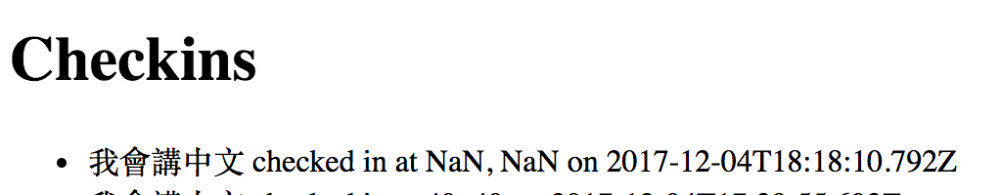

The product at hand is a Google Map rendering with user logins and the historical landmarks within a one-mile radius of the user. A server was written using node.js, express, mongodb, and heroku to take in user logins and locations. Ther heroku app would display the checkins of users, with location and date and time of checkin. The task at hand is to find security and privacy issues within the code and the server.
Curl was the primary method used to find security issues. While I was aware of the internal working of the project due to having worked on it, a blackbox approach was used. Code (index.js) was looked at afterwards.
There are a number of security issues with the web application, namely with the lack of defense against malicious script attacks. The product allows users to have too much control in terms of their input, which can cause harmful scripts to be injected into the product. The product currently allows user information to be easily accessed and read, and does not have steps in place to make sure user input isn't harmful. Multiple pages could do with more verification steps before fully executing to prevent these injection attacks.
The severity of this issue is high - being able to inject a script would cause seemingly non-threatening websites to be forced to refresh to an unsavory website. As the xss attack was only fixed once the document was cleared from the collection, it would have a realistic lasting imapact.
The issue was found using curl, and by injecting a script to Facebook as the login parameter. A screenshot of the curl command used is added below:
You can see the inejected script taken in as the login parameter in a new document in the checkins collection.
With every refresh of the page, the page redirects to Facebook. This would be a big issue if the site had been injected with malicious script.
A possible quick fix would be to limit the amount of characters allowed as the login parameter, to ensure that no complete script could be injected. Another solution would be to bar special characters from being able to be inserted into the collection. Yet another solution, which addresses XSS head-on, would be to implement HTML or JS validators for the login parameter, or to use output encoding, which then allows users to see the input displayed as data without actually executing it.
This would be a high security issue, as being able to access other users' logins puts everyone at risk of a data leak.
The issue was found by using the "not equal to" command in a query string for logins ($ne). Doing so displayed all logins that were not looked for by the user, and would therefore expose sensitive information (passwords, credit card information, etc).
A way to prevent information from leaking would be to cipher the login and details of each user before inserting into a mongodb collection/document. That way if it is displayed, then the information would not be as easily readable.
This security issue would be considered low-to-medium risk, as index.js does convert special characters in the lat and lng fields into floats. However, there is still risk of script injection in the login field, as mentioned above, and having the POST be able to take in non-numeric characters indicates bad coding practice.
I used curl and put special characters in the login and lat/lng fields to test if the document would still be created. While it took longer than usual, the document with special characters was still created. When looking at index.js, there is no bar against special characters.
The special characters then show up in Checkins on the index page of the heroku app.
Looking at index.js, this issue could be addressed by adding a condition to the if statement in /sendLocatio - ensure that the lat and lng values have to be numeric floats. If there are special characters that are not "." (due to having detailed coordinates), then an error message should be returned and the parameters should not be used to create a document.
The primary issue at hand is the vulnerability of cross-side scripting, and the ability to manipulate the information in each document entry in collections. Future reccomendations would be to first and foremost prevent script injection attacks, as well as add additional layers of protection (ciphering) to user logins and data. While ciphering develops a layer of defense, it is not a hard secure method, as ciphers can also be deciphered with enough time and energy. Therefore, all ciphering should be compeletely randomized, which would take time to implement for each document in a database.
However, XSS is still the main concern, and prevention of XSS would increase security of the product a great amount. XSS allows manipulation of cookies, scripts, information, and the use of a proxy - disallowing all of these possible attacks (both permanent and not) would up the security immensely.